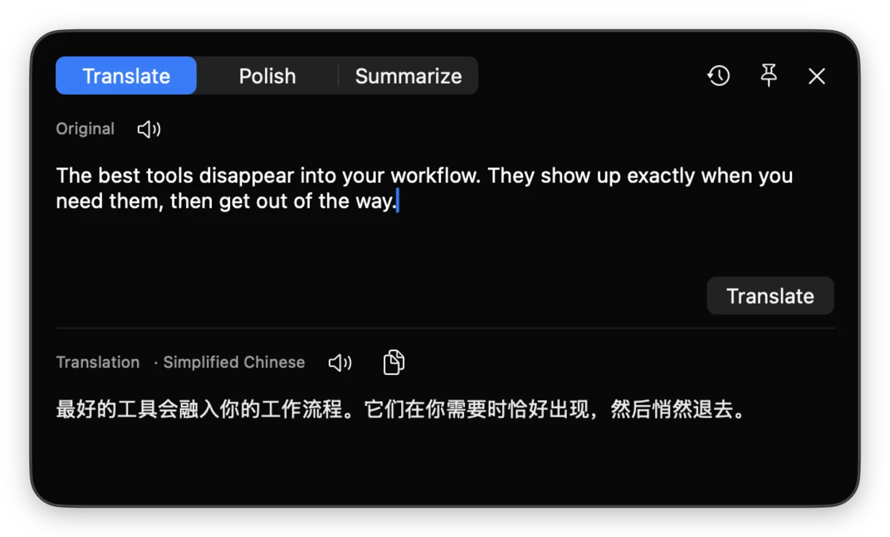
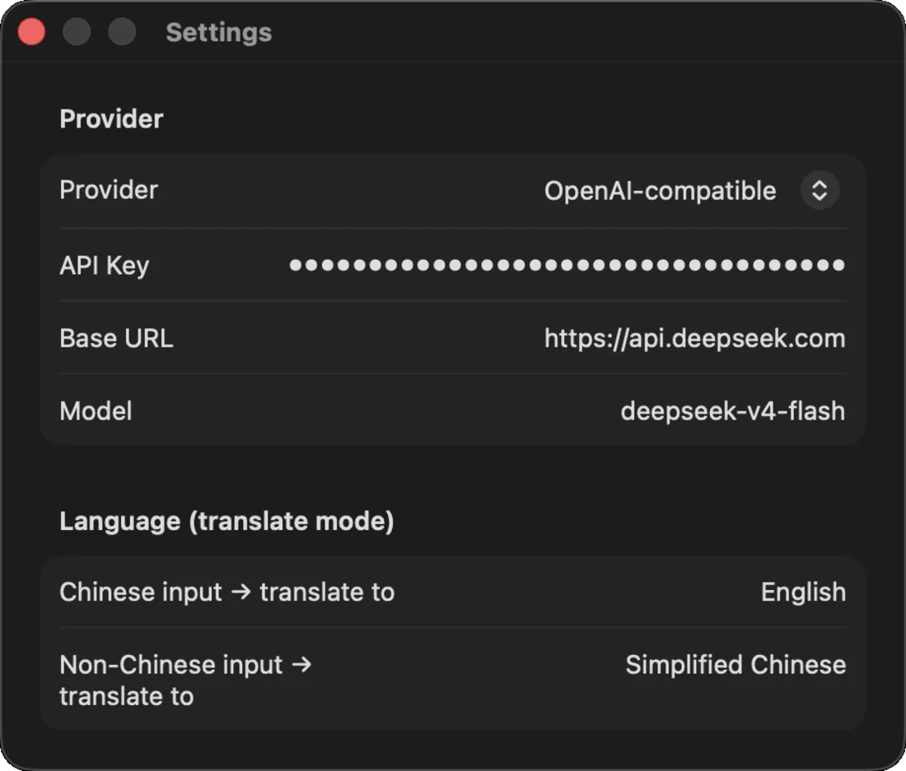

Lumo 可从菜单栏、全局快捷键、剪贴板、屏幕 OCR 或 PopClip 翻译、润色、总结文本。 自带 API Key——或使用 Apple 端侧模型，无需任何密钥；服务商配置始终保存在你的 Mac 上。

一个菜单栏应用搞定所有重活——服务商、流式输出、历史记录与朗读——而每个入口都保持轻快。
从应用窗口、剪贴板、快捷键流程、屏幕 OCR 或选中文本翻译、润色、总结。将 Lumo 指向 OpenAI、Claude、DeepSeek、本地 Ollama、任意兼容 OpenAI 的接口，或 Apple 端侧模型——无需 API Key。

通过 Server-Sent Events 逐字呈现结果——无需对着转圈干等。
自动判断输入是否为中文并切换翻译方向，两端语言均可配置。
每条结果都会保存到可检索的主从视图浏览器，随时回看。
内置文本转语音，可按需朗读原文或结果。
以 LSUIElement 方式运行——没有 Dock 图标，不占用窗口。需要时随叫随到。
Sparkle 在后台检查更新并就地安装新版本——经签名验证。
Lumo 首先是一款可独立使用的应用，PopClip 则是处理选中文本的可选快捷通道。
使用菜单栏、设置全局快捷键，或在想处理剪贴板内容时打开一个空窗口。
直接粘贴或输入文本，按 Tab 使用剪贴板，用 OCR 抓取屏幕文字，或在 PopClip 中点按 翻译、润色、总结。
应用打开时结果即流式呈现——自动保存到历史，可随时复制或朗读。
先安装应用。PopClip 为可选项；首次启动后，更新由 Sparkle 自动处理。
下载 Lumo.zip，解压后将 Lumo.app 移动到 /Applications。首次需清除一次隔离属性：
xattr -dr com.apple.quarantine /Applications/Lumo.app
应用会驻留菜单栏——请在顶部查看，而非 Dock。之后 Sparkle 会让它保持最新。
从菜单栏打开 Lumo，在设置中配置服务商、模型、API Key、翻译语言以及可选的全局快捷键。
可使用 OpenAI、Claude、DeepSeek、本地 Ollama、其他兼容 OpenAI 的接口，或 Apple 端侧模型（无需 API Key）。
如果你使用 PopClip，安装 Lumo.popclipext 即可一键将选中文本发送给 Lumo。该扩展仅作触发器；服务商、流式输出、历史与朗读仍由 Lumo.app 处理。
系统要求：macOS 26.0+ · 所选 LLM 服务商的 API Key · PopClip 可选